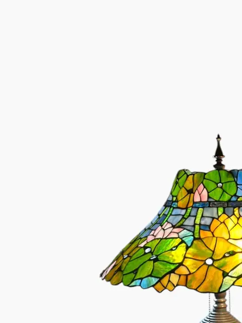
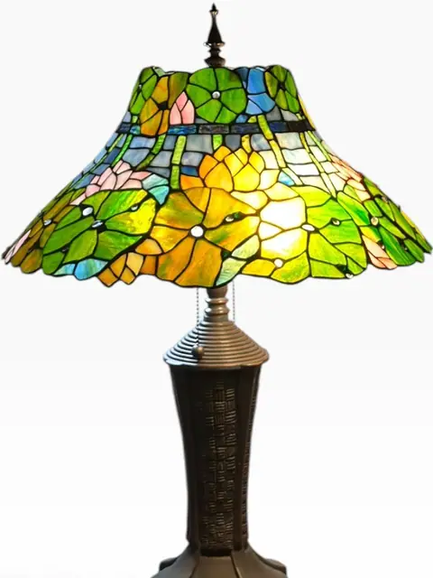
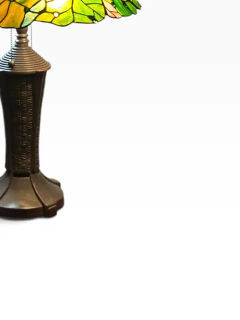
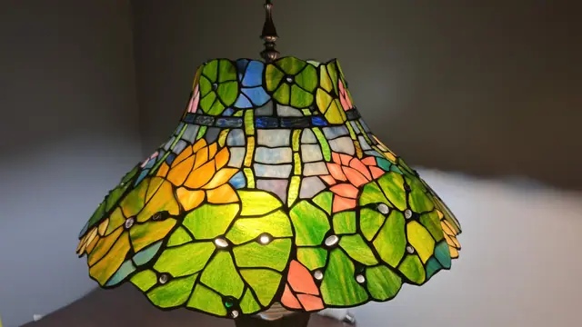
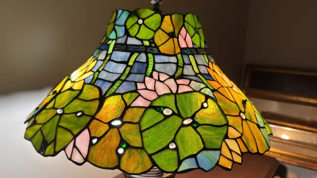
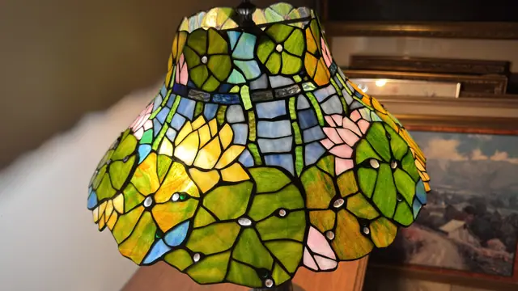
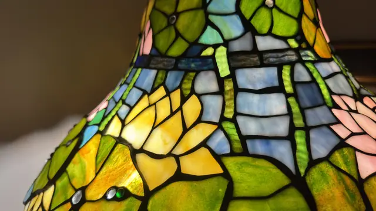
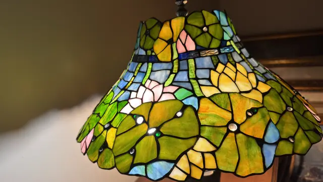
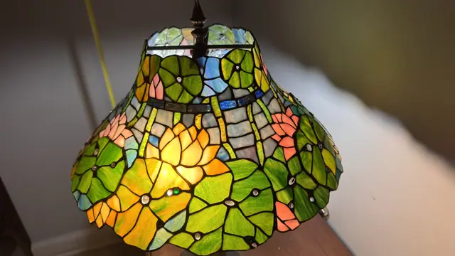

Lighting
Tiffany-Style 'Pond Lily' Stained Glass Table Lamp
· 20th century
Price Upon Request










About the Item
A Tiffany-style 'Pond Lily' table lamp with a flared leaded-glass shade blooming with water lilies and lily pads in mottled greens, golden yellow, blush pink and sky blue, studded with clear glass cabochons. It rises on a patinated bronze-tone base with a basketweave-textured column and a flared stepped foot. A decorative late-20th-century reproduction after the celebrated Tiffany Studios pond-lily designs. No tape-measure photos in folder; dimensions not legible. No maker's mark visible; attribution is stylistic only ('in the manner of Tiffany Studios').
Details
- Creation Year:
- 20th century
- Medium:
- Leaded stained glass, patinated metal
- Period:
- 20Th
- Condition:
- Offered in the condition shown in the photographs.
- Reference Number:
- VO-314